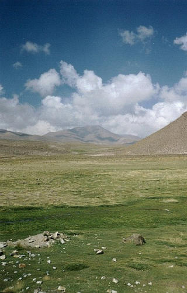
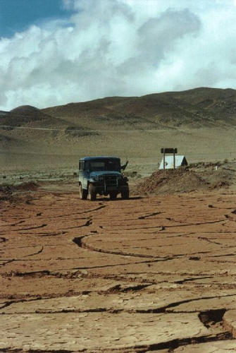
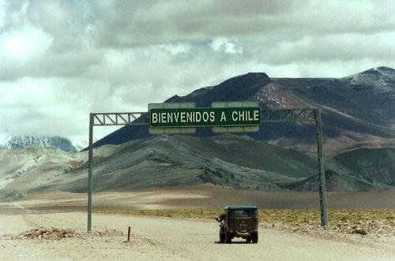
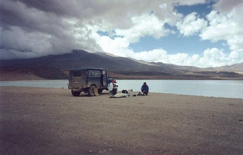
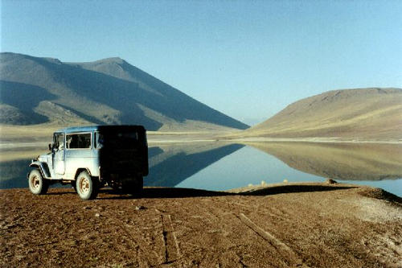
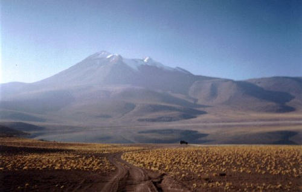
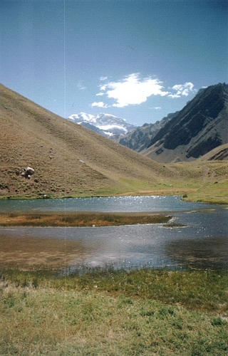

As melhores são as melhores, fotos que falam sozinhas, não precisam de explicação.

Ponto de parada dos antigos tropeiros
Local: Cordilheira dos andes - ARGENTINA - 2000

Lama seca e partida no chão
Local: Cordilheira dos andes - ARGENTINA - 2001

O portal de entrada do chile
Local: Cordilheira dos andes - CHILE - 2001

Almoço tranqüilo à beira da laguna tuyato
Local: Cordilheira dos andes - CHILE - 2001

A FOTO da viagem - Amanhecer na laguna miscanti
Local: Cordilheira dos andes - CHILE - 2001

Laguna miscanti, visão ampla, laguna espelhada
Local: Cordilheira dos andes - CHILE - 2001

Pico aconcágua (6962m) e arredores
Local: Cordilheira dos andes - CHILE - 2000